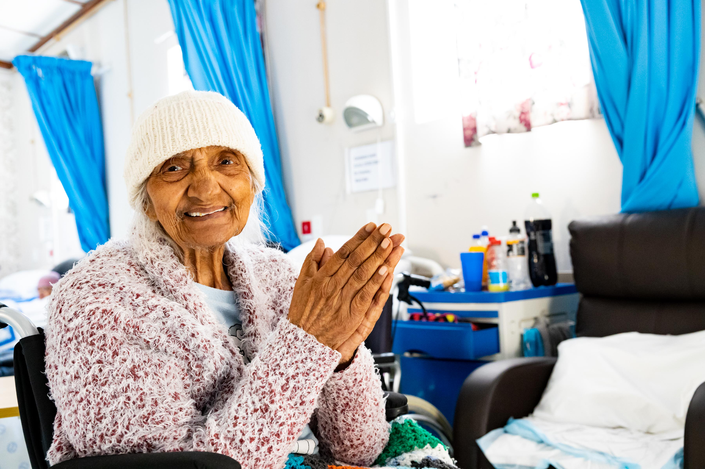
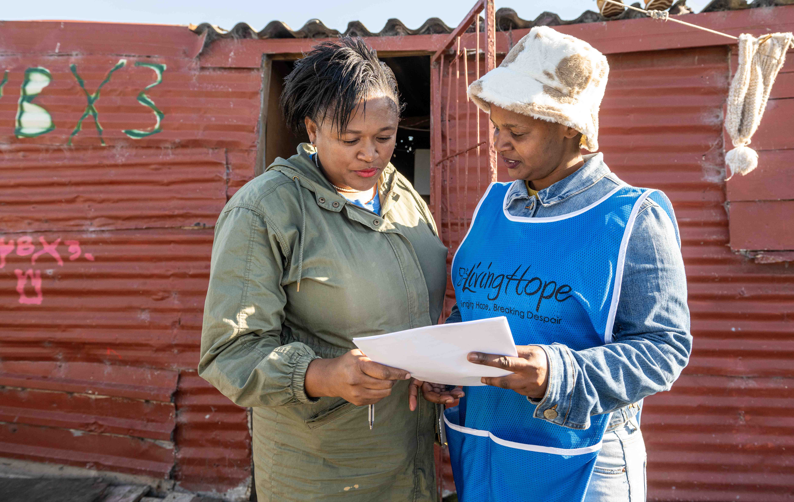

Bringing Hope, Breaking Despair, Building Africa


Visit Our WebsiteHe has told you, O man, what is good; and what does the LORD require of you but to do justice, and to love kindness, and to walk humbly with your God?
Micah 6:8 (ESV)